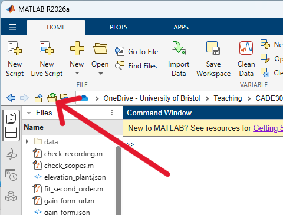
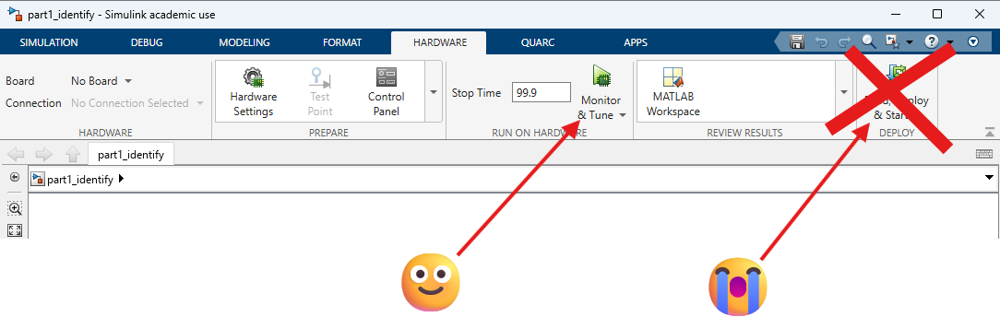

Part 1: identify the machine¶
Download everything you run in the laboratory from MATLAB Drive, or everything for the unit.
Version 2026.24, 2026-10-06. If this differs from the version in the folder's own README, download it again.
At the rig, about two hours. You leave with recordings. You do not leave with a controller.
The whole of this session is step 5 of the design cycle, obtaining a model of the process, the actuator and the sensor: find out what the machine actually does. Resist designing anything while you are here. The recording is the deliverable.
Set up¶
- If you have not already, download the laboratory files from the link at the top of this page and unzip them. Somewhere you can find again: on a bench machine the Desktop is fine, and so is MATLAB Drive.
-
Open MATLAB on the bench machine and point it at that folder. Use the browse button beside the address bar, arrowed below, and choose the folder you unzipped. Everything you run today expects to be run from there, so if a script cannot find a file, this is the first thing to check.

Browse for folder, and pick the folder you unzipped. -
The amplifier should be off when you arrive. If it is on, turn it off, then on again. Find the switch and agree who is watching it.
- Open
part1_identify.slx. - Read the warnings below before you click anything.
- Build it and run: Monitor & Tune. It takes a minute or two to build, and any errors will show in the Diagnostic Viewer that will pop up at the bottom of the window. You can use the dropdown below Monitor & Tune to do this in stages if you wish.
- Set
Yaw Demand = 0andElevation Input = 0before you start anything. - Let the arm rest on the floor and start the model. Do not hold it.
- If the machine is not facing you, adjust
Yaw Demanduntil it is.
Monitor & Tune. Not Build, Deploy & Start
The button you want is Monitor & Tune, which allows us to interact with the Quanser whilst the simulation is running. The one to the right, Build, Deploy & Start, runs things in non-interactive mode.
If you start it that way there is no stop button in Simulink, because the model is running on the hardware and not under MATLAB's control. Your only way out is to switch the amplifier off and then power cycle the Q8-USB DAQ box, where the built code is running, by removing and reinserting the black barrel jack at the back.
So: Monitor & Tune is the one that leaves you in charge: you can stop it, change a value and watch the effect while it runs.

The run stops itself at 99.9 seconds by default, and that is on purpose
It is the safety net behind the caution above: if a model does get started without you in control, it ends by itself in under two minutes rather than running until somebody pulls the plug.
Do not set the stop time to inf. It is tempting while you are
levelling, because you want to hover and adjust without the run ending
under you. The cost is that nothing ever stops on its own, and the
amplifier switch becomes the only way out of a mistake.
Take the levelling in two or three runs instead. It is a few more builds and it keeps the net in place.
It matters for your data too. The scopes hand their signals over when a run ends, and pressing Stop counts: you get everything up to the moment you stopped. What you do not get is anything from a run still in progress, so a run left going indefinitely is a recording you cannot save until you end it.
Getting a recording that is actually complete¶
The order matters, and getting it wrong is the commonest way to end up with a file that will not fit.
- Make sure nothing is running. Press Stop on the Hardware tab if the model is live.
- Monitor & Tune to build, connect, and run.
- The run starts. This is the one that catches people: the recording begins when you connect, not when the model started. Connect to a model that is already running and you capture from where you joined.
- Let it run out, or press Stop when you have what you need. Either ends the run and hands the scopes' data to the workspace.
save_recording('your_filename')straight away, before anything else. The workspace holds one run's worth and the next run replaces it.
save_recording warns you if a record does not begin at zero. That is the
symptom of joining a run late, and it means whatever you did before you
connected is not in the file.
Level it, and write down what that took¶
Every rig is a little different, and this is where you find out how yours differs. The counterweight sits where the last group left it, the arm has its own friction, and the loop has to hold all of that up before it does anything you asked for.
- Raise
Elevation Inputslowly until the arm sits level. Judge it by eye against the marker. Small steps: it is lightly damped, so give it a few seconds to settle after each one. - When it sits level and still, note the value that held it.
- Stop the model while the arm is sitting there. The scopes hand their data to the workspace when a run ends, not while it runs, so there is nothing to read until you stop. Stopping with the arm level leaves the level angle at the end of the record.
-
Then:
It writes rig_calibration.mat and tells you two things:
- what the loop spends just staying up. The demand saturates a fixed distance above the trim, so a rig that needs more to hold level leaves your controller less to work with. The checks later read this file, so your gains are judged against the rig you actually used.
- how far above the resting position level is, which is the offset between the encoder's zero and the datum your model is fitted about.
If the number looks odd
level_rig says so. Very little head-room usually means the counterweight
is too far in; a lot usually means the arm was not really level. Both are
worth a second look before you spend an hour fitting a model to it.
Keep rig_calibration.mat with your recordings. A set of gains checked
against a different rig's trim has not really been checked.
Record a step¶
- Leave the input at the value that held it level. Do not put it back to zero: zero drops the arm off level before you have started, and if the box already holds the value you meant to step to, the recording has no step in it at all.
- Let it settle. Give it a full minute: at this damping a disturbance rings for about that long, and a swing left over lands in this one's fit.
- Add about 2 to it. On the reference rig that is -1.6 going to +0.4. Write down both numbers; the difference is the step your fit needs.
- Leave it. Do not touch anything for the rest of the run. The model stops itself at 100 s.
-
Save it with a name you will recognise later:
Not the laboratory's
s_save, which always writes tod_Part1.mat. You are about to take several recordings, and with one filename each overwrites the last.
That is one usable run. Take at least three, and take them properly:
- Let the arm settle completely between runs. At this damping a disturbance takes about a minute to die away, and a swing left over from the last run ends up in this one's fit.
- Vary the size of the step: 1.5, 2, 2.5 added to your level value. If the gain you fit is the same each time, the axis is linear over that range. If it is not, you have found the limit of the single model you were about to design against.
If a fit refuses
It says what is wrong, in the order these usually go wrong: whether the front of the record was thrown away, whether the input changes at all and when, how much run there is either side, and whether the arm was still swinging beforehand. Quicker than reading the raw arrays.
check_scopes is the companion: it reports what each scope is logging
and whether it is dropping any of it.
If results.mat will not go away
The model you downloaded does not write a log file, so this should not
happen. A copy that was already on the machine might: Simulink can archive
each run to results.mat.
MATLAB holds that file open, which is why you cannot delete or rename it from MATLAB's own file browser, and why Explorer will not either. It is not the rig and not Windows being awkward.
Turn the archiving off rather than fighting it every run: Configuration
Parameters → Data Import/Export → Log Dataset data to file. You do not
need that archive. Your data comes from the scopes, and save_recording
takes it from there.
Check it before you leave¶
This is the part groups skip and then regret. Plot each recording before you pack up:
Three things to confirm on the plot:
- It was steady before the step. If the trace is already swinging, the starting trim is whatever the swing happened to be doing, and your gain will be out by anything up to 25%. Take it again.
- The step is in there. You changed the input, not just thought about it.
- There are at least four clear oscillations after the step, above the noise. You need peak heights to get damping, and you need several.
If any of those fail, you have the rig in front of you right now. Take it again. You cannot fix a bad recording in Part 2.
If there is time left¶
Three things worth having, in this order. The first two are what let you say how far one model reaches, which a single recording cannot.
Repeat at a different trim. Set Elevation Input to 1, let it settle,
then step to 1.5. Then from 2.5 to 3. Fit each later and see whether the
natural frequency is the same. Gravity stiffness on an arm goes as
\( \sin\varepsilon \), so there is a real question about whether one model
serves the whole range, and it is settled by measurement rather than argument.
Repeat at a different step size. From the same trim as your main recording, step by half as much, and then by twice as much if the arm has the travel for it. A linear model has one gain and one natural frequency at every amplitude, so if the fits differ, what you have found is the edge of where a linear model of this rig applies. Note the trim and the step size beside every recording: a fit quoted without them cannot be used by anyone, including you in a fortnight.
Watch the coupling. With the model running, change Yaw Demand and watch
what elevation does. Then disturb pitch by hand, gently, and watch what travel
does. Write down what you see. You are not measuring it yet; you are finding
out what you will be up against when you come back for three axes.
Take away¶
- Your
.matrecordings. Email them to yourself before you leave the room. - Your notes on what the rig did that the data will not show: what you held, what you nudged, anything that looked wrong.
Then Part 2.